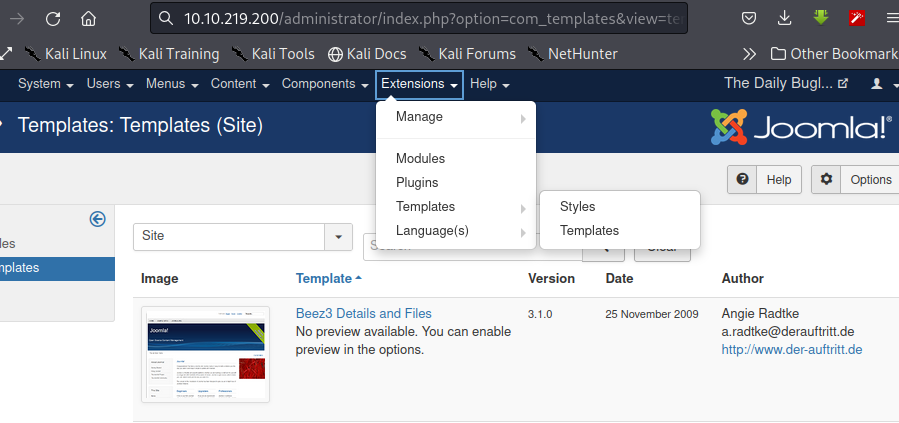

Home
HTB - Daily-Bugle
Daily-Bugle has running a web application which is vulnerable to sql injection that is leveraged to get a shell. Information found on the machine is then used to elevate privileges to a legitimate user; whereas the sudo utility is used to elevate privileges to root.
Scanning and Enumeration
Using NMAP to scan the host, we have...nmap -p- --min-rate=1000 -sC -A $dailybugle
Starting Nmap 7.92 ( https://nmap.org ) at 2022-03-09 20:56 WAT
Warning: 10.10.190.155 giving up on port because retransmission cap hit (10).
Nmap scan report for 10.10.190.155
Host is up (0.22s latency).
Not shown: 51485 closed tcp ports (conn-refused), 14047 filtered tcp ports (no-response)
PORT STATE SERVICE VERSION
22/tcp open ssh OpenSSH 7.4 (protocol 2.0)
| ssh-hostkey:
| 2048 68:ed:7b:19:7f:ed:14:e6:18:98:6d:c5:88:30:aa:e9 (RSA)
| 256 5c:d6:82:da:b2:19:e3:37:99:fb:96:82:08:70:ee:9d (ECDSA)
|_ 256 d2:a9:75:cf:2f:1e:f5:44:4f:0b:13:c2:0f:d7:37:cc (ED25519)
80/tcp open http Apache httpd 2.4.6 ((CentOS) PHP/5.6.40)
|_http-generator: Joomla! - Open Source Content Management
| http-robots.txt: 15 disallowed entries
| /joomla/administrator/ /administrator/ /bin/ /cache/
| /cli/ /components/ /includes/ /installation/ /language/
|_/layouts/ /libraries/ /logs/ /modules/ /plugins/ /tmp/
|_http-title: Home
|_http-server-header: Apache/2.4.6 (CentOS) PHP/5.6.40
3306/tcp open mysql MariaDB (unauthorized)
Service detection performed. Please report any incorrect results at https://nmap.org/submit/ .
Nmap done: 1 IP address (1 host up) scanned in 333.68 secondsWeb Server - TCP 80
Loading the web page, we get... Let's perform directory bruteforcing on the application using gobuster. We have... There is an administrator path, let's visit it; It is a joomla managed application, let's get the version. Joomla websites since version 1.6.0 have an easy method that reveals their version, all you need to do is access the URL...http://www.[thejoomlawebsite].com/administrator/manifests/files/joomla.xmlversion 3.7.0 running on the web application. SQL injection vulnerability found for this version on
https://blog.sucuri.net/2017/05/sql-injection-vulnerability-joomla-3-7.html.
PoC: http://[joomla_site]/index.php?option=com_fields&view=fields&layout=modal&list[fullordering]=[sql_code]http://[ip_address]/index.php?option=com_fields&view=fields&layout=modal&list[fullordering]=(SELECT * FROM (SELECT(SLEEP(30)))GDiu)Exploiting the SQL Injection vulnerability
Python exploit found for this vulnerability onhttps://github.com/stefanlucas/Exploit-Joomla. Running the exploit we have...
Using hashcat and popular wordlist rockyou.txt to crack the password, we have...
 With the cracked password, let's try logging into the admin login we found earlier. We have...
With the cracked password, let's try logging into the admin login we found earlier. We have...
 Successful, we are super user. let's try exploiting the endpoint, preferably to get a shell.
Successful, we are super user. let's try exploiting the endpoint, preferably to get a shell.Looking through the internet,
https://www.hackingarticles.in/joomla-reverse-shell/ explains how to get a reverse shell using the administrator endpoint
we have access to after post-exploitation.

From the image above, select Extensions, under "Templates" select "Templates"; then select the "Beez3" template edit the "index.php" file for the template, swapping the
code there with your php reverse shellcode. To run the file, select "Template Preview" at the top of the page. On our listener we have...
Great, we have a shell 😁.Although, we got a shell, we are not a normal user. We are the web application user "apache". Looking around the file system in the
/var/www/html directory we have
a file called configuration.php. In it contains SQL login information, using the password to login for user "jjameson" in the home directory we successfully get a shell
and can view the user FLAG...
Privilege Escalation
Checking for binaries with SUID bit; nothing of interest except "SUDO". Let's view the user privileges configured... This shows that userjjameson has sudo access to yum binary. How to escalate privilege using the yum binary through sudo found on gtfobins; https://gtfobins.github.io/gtfobins/yum/#sudo .
Gtfobins is a curated list of Unix binaries that can be used to bypass local security restrictions in misconfigured systems.Run the following commands... SUCCESS, we now have a root shell and can view the root FLAG.
Thank you for reading my writeup 😀 | Home